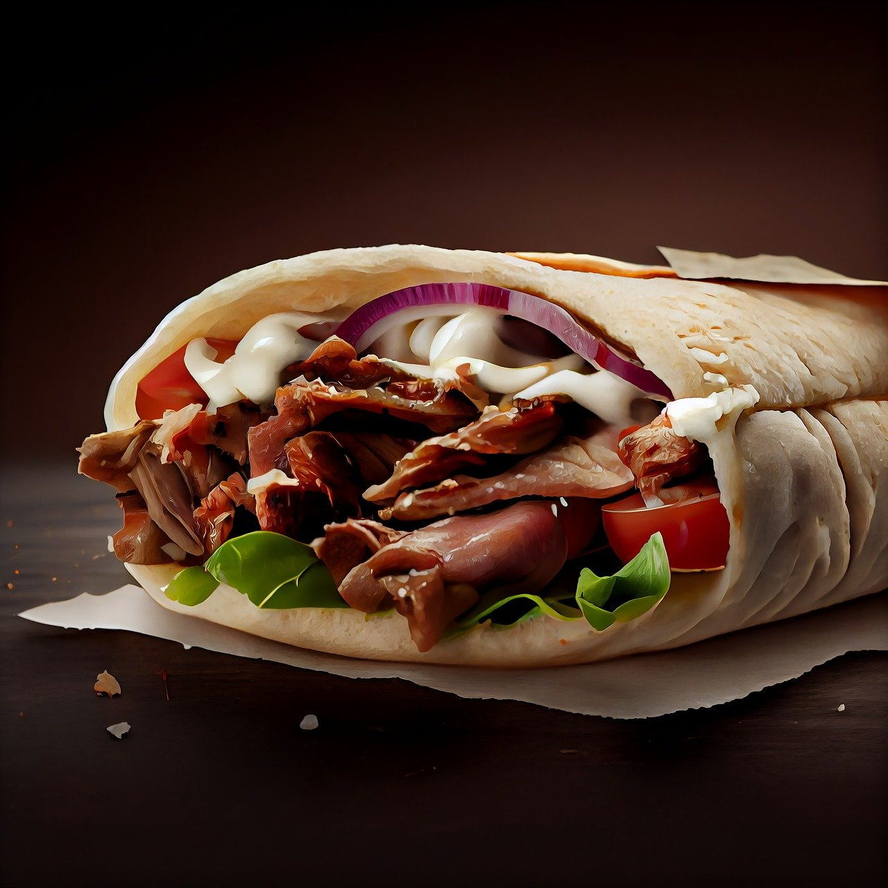

Dania warte zjedzenia
Włochy

Pasta alla carbonara (spaghetti alla carbonara) – potrawa kuchni włoskiej złożona z makaronu, jajek, pancetty lub guanciale, sera pecorino romano lub parmezanu oraz czarnego pieprzu. Niepoprawnym jest mówienie o „sosie carbonara”, ponieważ makaron i pozostałe składniki stanowią tu nierozerwalną całość.
W niektórych przepisach zamiast całych jaj używa się samych żółtek. Pieprz jest obowiązkowy. Najpowszechniej używanym makaronem jest spaghetti. Tuż za nim plasuje się bucatini. Używa się też m.in. makaronu w kształcie tzw. rurek (penne, rigatoni, maccheroni).
Kwestią sporną jest dodatek śmietany. Zdaniem tradycjonalistów dodanie jej do carbonary jest błędem. Używają jej głównie obcokrajowcy. Inne rzadziej spotykane składniki (głównie poza granicami Włoch) to np. smażona cebula, czosnek lub białe wino.
United States of America

Chicago-style pizza, inaczej zwana też deep-dish pizza, to pizza na grubym cieście pochodząca z Chicago. Pieczona w głębokiej blasze, przypomina bardziej ciasto niż tradycyjną pizzę. Na samym spodzie pizzy kładzie się ser, później pozostałe dodatki, najczęściej kiełbasę (ang. Italian sausage), a dopiero ostatnia warstwa to sos pomidorowy (ang. tomato sauce). Chicago-style pizza prawdopodobnie została wynaleziona w Pizzerii Uno w Chicago w 1943 i obecnie cieszy się popularnością w całych Stanach Zjednoczonych.
Turcja
Sallam Allekum Kebab to turecka potrawa, która cieszy się ogromną popularnością Polaków. Jest wiele rodzajów kebabów, dzięki temu każdy może znaleźć coś dla siebie. Dobrej jakości mięso i świeże surówki, a także pyszne sosy gwarantują, że kebab będzie pełnowartościowym, sycącym posiłkiem. Opcją dla osób, które ograniczają spożywanie mięsa, jest kebab z falafelami, czyli smażonymi kuleczkami z ciecierzycy.
Bługaria

Gjuwecz jest to ogólna nazwa bułgarskich potraw, przygotowanych w glinianym naczyniu (o tej samej nazwie), które umożliwia długie duszenie potraw w niewysokich temperaturach.
Głównym składnikiem potrawy są warzywa oraz mięso (opcjonalne). Poniżej proponujemy przepis na przepyszny gjuwecz z mięsem.